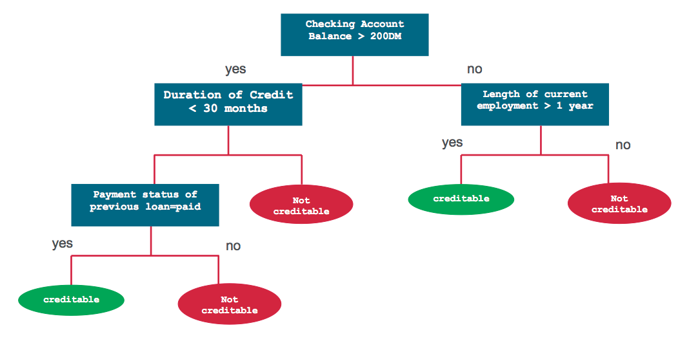

基于树的机器学习模型
基于树的决策模型在数据决策中非常的常见。因为树形结构的特性，使得它们相对于线性模型也能有很好的映射。决策树、随机森林和提升树作为树形决策模型的主要代表，在稳定性和可解释性上有着深度学习所无法比拟的优势1，在论文中经常看到这些方法与深度学习方法的结合，但是苦于学艺不精，一直没有很好的理解，借以此文，聊以记录。注：部分文字部分来源于参考链接。
We would thanks Sadanad Singh provide the main body for this article in English. please check the original article here: https://datasciencevision.com/tree-based-models/. Translate by waynehfut.
前言
本文将系统的介绍树形决策模型的主要结构，方法及Python示例代码。但是也要注意到实际数据中，单独的树形模型往往难以胜任复杂的需求。因此，基于集成的算法(Bootstrap/Bagging)被应用于实际的精度调整中
决策树
决策树(Decision Tree)是一种监督性的学习算法。它适用于分类和具有连续性的输入(特征)/输出(预测)。基于树的方法，通常将特征空间划分为一系列的矩形(决策空间)，然后给每一个矩形设置一个简单的子模型(如仅仅是设置一个常数阈值)。理论上上来说，这是简单有效的。首先通过一个例子来理解决策树，然后我们使用形式化分析法来分析决策树的创建过程。如考虑一个简单的借贷公司用户的数据集。我们可以综合客户的账号余额、信用记录、任职年限和历史借贷来预测用户的风险等级，并给出是否借贷。该问题便可以使用下列的决策树来解决：

CART 模型
分类回归树(Classification and Regression Trees, CART)是由Leo Breiman提出决策树构建算法，主要用来做面向分类或回归预测建模问题。CART是生成决策树最为常见的一种算法。在scikit-learn中主要使用sklearn.tree.DecisionTreeClassifier和sklearn.tree.DecisionTreeRegressor来分别用于基于决策树的分类和回归。
CART模型包括选择输入变量和用于这些变量的分割点，直到构建合适的树模型。通过贪婪算法(greedy algorithm)使得效益函数(cost function)最小化。此外还需要定义一个停止规则，例如，为树的每个叶子节点分配的最小训练实例数。
其他的决策树算法
- ID3 (Iterative Dichotomiser 3)
- C4.5 ID3的改进版
- CHAID(Chi-squared Automatic Interaction Detector)
- MARS更适用于处理数值型数据的决策树拓展模型
- Conditional Inference Trees 条件推理树
回归树（Regression Trees）
我们再来关注一下CART算法用于回归树模型的细节。简言之，构建一个决策树分为以下两个步骤：
- 分割预测器空间 - 也就是说，把一个诸如\(X_1,X_2,...,X_p\)的集合分为\(J\)个不同的且非重叠的区域\(R_1,R_2,...,R_J\).
- 对于每个落在区域\(R_J\)的观测值，做出相同的预测，即\(R_J\)这一域中训练样本的预测值均值。
为了创建\(J\)个区域，\(R_1,R_2,...,R_J\),预测器将被分为高维度的矩形或者盒型。其目的在于通过下列公式找到使得\(R_1,R_2,...,R_J\)区域所对应的RSS(Root Sum Squares,统计平方公差)值最小：
\[\sum_{j=1}^J\sum_{i\in R_j}\left ( y_i - \widehat{y}R_j \right )^2\]
其中 \(\widehat{y}R_j\) 代表着 \(j^{th}\) 盒子中训练观测得到的平均预测值。
鉴于这种空间分割在计算上是不可行的，因此我们常使用贪心算法（Greedy Approach）来划分区域，我们称之为递归二元分割（Recursive binary splitting），这种方式是贪心的，是因为他在创建树的过程步骤中，最佳分割都会在每个特定的步骤确定的，而不是在当前阶段优化分割方式，以期在未来步骤中获得一个最好的结果。要注意到分割区域\(R_j\forall j\in [1,J]\)将会是一个矩形。
为了递归式的完成二分，首先需要选择一个预测器 \(X_j\) 和分割点 \(s\)，
从而将预测空间分为两个区域（半平面） \(R_{1}\left ( j,s \right )=\left \{ X\mid X_{j} < s \right \}\) 和 \(R_2\left ( j,s \right ) =\left \{ X\mid X_j \geq s \right \}\) 。尽可能的将RSS的效用降低，数学上，我们通过求下述公式的最小值来搜索 \(j\) 和 \(s\) 的值：
\[\sum_{i:x_i\in R_1\left ( j,s \right )}\left ( y_i - \widehat{y}R_1 \right )^2 + \sum_{i:x_i\in R_2\left ( j,s \right )}\left ( y_i - \widehat{y}R_2 \right )^2\]
其中 \(\widehat{y}R_1\) 代表训练区域\(R_1(j,s)\)观测样本的平均预测值，\(\widehat{y}R_2\) 代表训练区域\(R_2(j,s)\)观测样本的平均预测值。这个过程将是循环往复的，以搜索到最好的预测器和分割点，并进一步分割数据使得每个子区域的RSS值最小化。然而，我们不会分割整个预测器的空间，只是分割一个或两个已经确定的区域。这一过程会一直持续到停止准则部分。例如，我们可以设定停止准则为每个区域最多包含\(m\)个样本。一旦我们创建了区域\(R_1,R_2,...R_j\),对于一个给定观测样本，我们就可以用该区域所有训练样本的平均值来预测该测试样本的所属。
分类树（Classification Trees）
分类树与回归树非常的类似，但是他们的区域在于，分类树一般用于定性的分析预测而不是定量的分析预测。我们回想一下回归树，它所作的预测是从属于同一叶子节点的训练样本观测值的均值所给出的。但是对于分类树来说，我们所预测的类别是训练样本观测值在某区域下最常见的类别，即训练观察值的模式响应。为了达到分类的目的，很多时候系统并不会只预测一个类别，它常常是去预测一组类别及其出现的概率。
分类树的生成和回归树的生成方式也十分类似。正如在回归树中那样，我们一般使用递归性的二元分割来生成分类树。然而在分类树中，RSS不能作为二元分割的标准。我们需要定义叶子节点不纯度（node impurity） \(Q_m\) 来替代RSS，即一种可以在子集区域\(R_1,R_2,...R_j\)度量目标变量同质性的方法。在一个节点\(m\)中，我们可以通过\(N_m\)个样本观察值来表示一个区域\(R_m\)所出现类别的频率，第\(k\)个类别在第\(m\)个区域下训练所出现的频率可以表示为：
\[\widehat{p}_{mk} = \frac{1}{N_m} \sum_{x_i \in R_m}I\left( y_i = k\right)\]
其中，\(I\left(y_i = k\right)\) 表示了指标函数，如果 \(y_i = k\) 则结果为1，否则为0。
一个节点不纯度 \({Q}_{m}\) 的自然定义是分类错误率。分类错误率是指该区域不属于常见类别的观测值所占的比例：\(E=1-\max_k\widehat{p}_{mk}\)，说明其是不可微的，因此该数值不太适合数值优化。更近一步的，这个对节点概率的变化十分不敏感，是的分类错误率这一指标对树的构建不是很有效。两个常使用的节点不纯度的度量指标是gini 2和cross-entropy3
Gini(基尼指数)是衡量 \(K\) 个类别总方差的指标，定义公式如下：
\[G=\sum_{k=1}^{K}\widehat{p}_{mk}\left(1-\widehat{p}_{mk}\right)\]
G的一个较小值表示节点包含来自各个单类大多数样本的观察值
在信息论中，交叉熵（cross entropy）表示了系统的混乱（不规则）程度。对于线性二元系统而言，如果系统包含的数据全部来自一个类别，交叉熵将会为0；如果各有一半来自两个类别，交叉熵将会为1。进一步的与基尼指数相似，交叉熵也常用来去衡量节点的不纯度，定义如下：
\[S=-\sum_{k=1}^{K}\widehat{p}_{mk}\log\left(\widehat{p}_{mk}\right)\]
与G值相似，较小的 \(S\) 值同样表示了节点中包含了单个类别中大多数的观察值。
常见参数
现在，我们已经对决策树有了一个数学上的理解，让我们总结一下决策树和基于树的学习算法中最常用的一些术语。理解这些术语还有助于基于这些方法对模型进行调优。
- 根节点(Root Node)：代表了整个种群，并进一步的可以分割两个或多个子集。
- 分割(Splitting)：处理并分割一个节点到两个或者多个子节点。
- 决策点(Decision Node)：当一个子节点分割出更多的子节点，这时该节点便可被称为决策点。
- 叶子/终端节点(Leaf/Terminal Node)：不可再分的节点
- 分支/子树(Branch/Sub-Tree)：树的子部分
- 父节点和子节点(Parent and Child Node)：将节点划分为子节点的节点称为父节点，其中子节点是父节点的子节点。
- 节点分割最小值(Minimum samples for node split)：一个节点在视作可被分割时的所需要的最小样本数（或观测值）。它用于控制过拟合，较高的值防止模型学习关系，这种关系或许只会出现在特定样本中。需要注意在交叉验证时对其调优。
- 终端节点(叶子节点)最小值(Minimum samples for a terminal node(leaf))：叶子节点或者终端节点所需要的最小实例数（或者观测值）。与节点分割的最小值相似，这也是用来控制过拟合的。对于不均衡的问题而言，应该适用一个较小的值，因为属于少数类别的样本要少许多。
- 树的垂直深度(Maximum depth of tree(vertical depth))：树的最大深度，也是用来控制过拟合的。较低的值会阻止模型在特定样本中的依赖关系。它应该使用交叉验证来调优。
- 终端节点最大数量(Maximum number of terminal nodes)：也参照叶子节点，一般与在最大深度一同定义。一个二叉树被创建后，一个深度为\(n\)的节点将会最多创建\(2^n\)个叶子节点。
- 可用以分割的最大特征集(Maximum features to consider for split)：在寻求选择最优分割时选择的特征及大小（随机选取）。一个典型的值时可用特征总数的平方根。大的值通常会导致过拟合，但是有时候也取决于问题本身。
分类树的例子
为了演示不同基于树的模型，我们将使用Kaggle上提供的美国收入数据集。可以从Kaggle上下载。让我们首先看下这个数据集中可用的所有不同特性。
1 | import pandas as pd |
在上面的代码中，我们导入了所有需要的模块，以数据帧的形式加载了测试和培训数据。我们还去掉了在建模练习中不重要的fnlgwt列。
让我们先看下前5列的训练数据：
| I | Age | Workclass | Education | EdNum | MaritalStatus | Occupation | Relationship | Race | Sex | CapitalGain | CapitalLoss | HoursPerWeek | Country | Income |
|---|---|---|---|---|---|---|---|---|---|---|---|---|---|---|
| 0 | 39 | State-gov | Bachelors | 13 | Never-married | Adm-clerical | Not-in-family | White | Male | 2174 | 0 | 40 | United-States | <=50K |
| 1 | 50 | Self-emp-not-inc | Bachelors | 13 | Married-civ-spouse | Exec-managerial | Husband | White | Male | 0 | 0 | 13 | United-States | <=50K |
| 2 | 38 | Private | HS-grad | 9 | Divorced | Handlers-cleaners | Not-in-family | White | Male | 0 | 0 | 40 | United-States | <=50K |
| 3 | 53 | Private | 11th | 7 | Married-civ-spouse | Handlers-cleaners | Husband | Black | Male | 0 | 0 | 40 | United-States | <=50K |
| 4 | 28 | Private | Bachelors | 13 | Married-civ-spouse | Prof-specialty | Wife | Black | Female | 0 | 0 | 40 | Cuba | <=50K |
我们需要做一些数据清洗，首先我们将需要所有列中的特殊符号，更进一步的，任何的空格和"."都需要从所有的str数据中移除。如下所示：
1 | #replace the special character to "Unknown" |
如你所见，有两个各自独立描述教育的列 -- Education 和 EdNum. 假设这两列高度相关，因此删除了Education列。Country属性也不应该在该预测收入中发挥作用，因此我们也将删除它。
1 | df_train_set.drop(["Country", "Education"], axis=1, inplace=True) |
1 | colnames = list(df_train_set.columns) |
现在我们已经清理了数据，让我们看看数据集是如何平衡的:
1 | df_train_set.Income.value_counts() |
1 | <=50K 24720 |
1 | df_test_set.Income.value_counts() |
1 | <=50K 12435 |
在训练和测试数据集中，我们发现<=50K类大约是>50K类的3倍。这就要求我们以不同的方式对待这个问题，因为这是一个数据相当不平衡的问题。但是，为了简单起见，我们将把这个练习当作一个常规问题来处理。